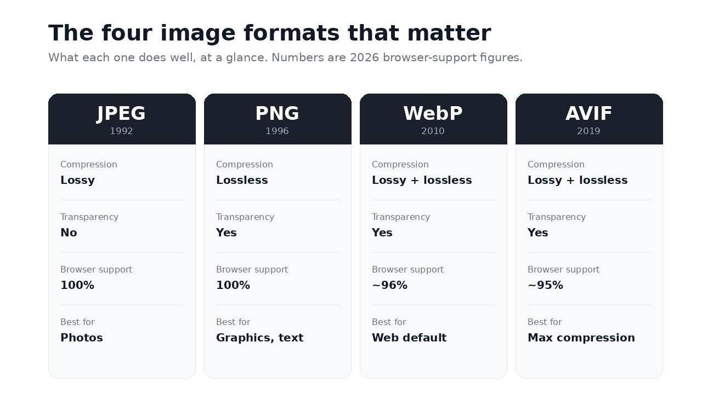
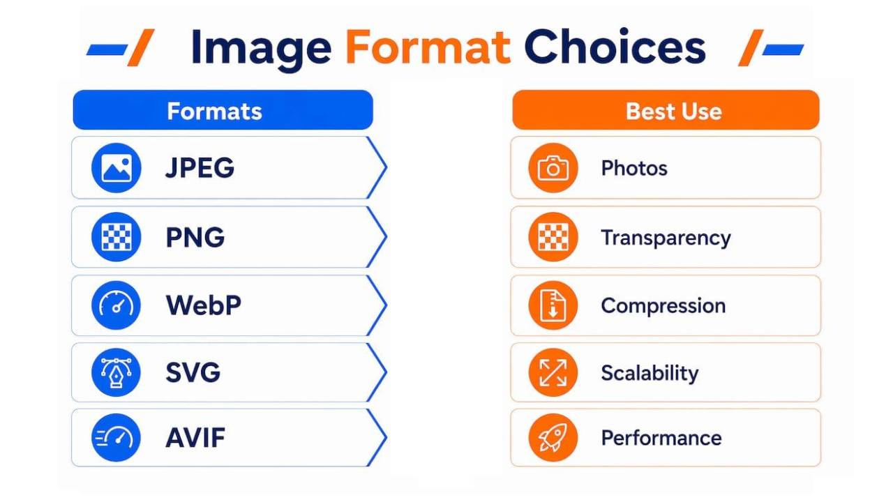
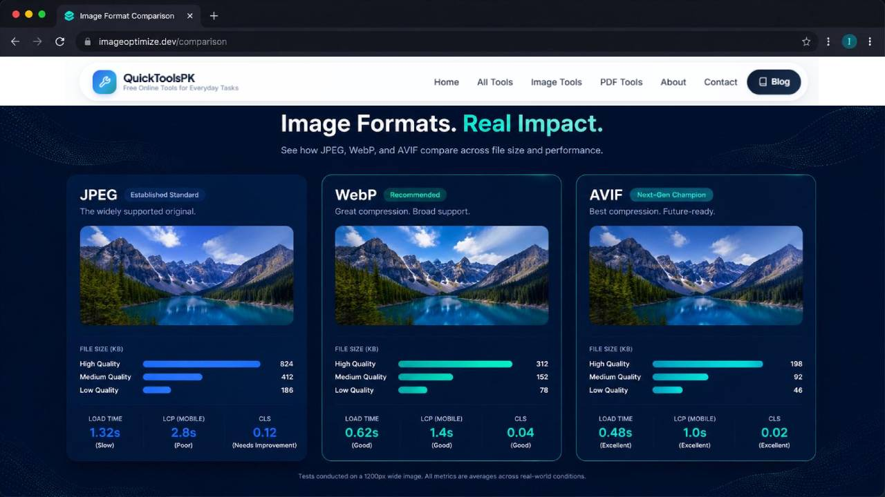
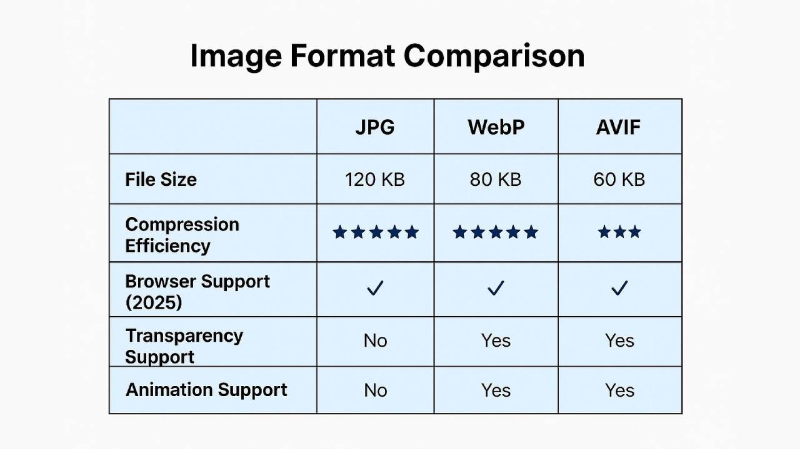

You have a logo, a product photo, a screenshot, and a wide banner. You export them all as JPG because that's what you always do. Then someone tells you to use WebP. Someone else says AVIF is the future. A designer insists the logo must stay PNG.
Who's right? All of them, depending on the image. This guide helps you choose between WebP, AVIF, JPG, and PNG for each type of image on your website, and shows you how to test the results yourself instead of guessing.
The Short Answer
There is no single best format. Match the format to the image:
- Transparent logo or icon: PNG, or WebP if you want a smaller file
- Product photo: WebP or AVIF, with JPG as a safe fallback
- Screenshot with text: PNG, or lossless WebP
- Photographic banner: AVIF or WebP, with JPG as a fallback
- Maximum compatibility: JPG for photos, PNG for graphics
If you only remember one rule: photos like lossy formats, graphics with sharp edges like lossless formats.
The Four Formats in Plain Language
Two ideas explain almost everything.
Lossy compression throws away some detail the eye barely notices to make the file smaller. Lossless compression keeps every pixel exactly as it was.
| Format | Compression | Transparency | Best known for |
|---|---|---|---|
| JPG | Lossy | No | Photos, works everywhere |
| PNG | Lossless | Yes | Logos, screenshots, sharp graphics |
| WebP | Lossy or lossless | Yes | A flexible modern format for the web |
| AVIF | Lossy or lossless | Yes | Very efficient for photos, newer |

JPG: Old, Simple, Works Everywhere
JPG has been the default for photos for decades. Every browser, phone, email app, and social platform understands it.
Good for: photos where wide compatibility matters.
Weak at: transparency (not supported), and sharp text or thin lines, where it can leave blurry edges.
PNG: Sharp and Lossless
PNG keeps every pixel intact and supports transparency. That makes it a natural fit for logos, icons, and screenshots.
Good for: logos, icons, screenshots, graphics with flat colors, anything that needs a transparent background.
Weak at: photos, where the files can become very large.
If you want to know why a PNG sometimes grows when converted to another format, we explain it in our guide on why an image gets bigger after converting to JPG.
WebP: The All-Rounder
WebP can do lossy compression like JPG, lossless like PNG, and it supports transparency. That makes it flexible: one format that can often replace both JPG and PNG on a website.
Good for: most website images, including photos and transparent graphics.
Things to check: whether your CMS, plugins, email tools, and social platforms accept it. Support across modern browsers is broad, but confirm it for your audience.
AVIF: Very Efficient, Newer
AVIF is a newer format that can produce very small files for photos at good quality. It also supports transparency.
Good for: photos and photographic banners where every kilobyte counts.
Things to check: browser and tool support (broad now, but not as old as WebP), and the time it takes to encode images, which can be slower. Results vary by image, so test your own files.
Decision Matrix: Which Format for Which Image?
This is the part most guides skip. Here's a practical matrix by image type.
| Image type | First choice | Safe fallback | Why | Avoid |
|---|---|---|---|---|
| Transparent logo | PNG (or WebP) | PNG | Needs transparency and crisp edges | JPG (no transparency) |
| Product photo | WebP or AVIF | JPG | Photos compress well with lossy formats | PNG (usually too large) |
| Screenshot with text | PNG (or lossless WebP) | PNG | Sharp text needs lossless storage | Low-quality JPG |
| Photographic banner (hero) | AVIF or WebP | JPG | Large photo, so size savings matter most | PNG |
| Icons and simple graphics | SVG (if vector) or PNG | PNG | Flat colors and sharp edges | JPG |
| Image for email or social upload | JPG or PNG | Same | Not every platform accepts newer formats | Assuming WebP/AVIF will upload |
This is general guidance. File size and quality depend on the image and the settings you use, so verify with your own test (below).

Transparent Logo: Keep the Edges Clean
A logo usually has flat colors, sharp edges, and often a transparent background. JPG can't do transparency, so it fills the empty area with a solid color. It can also blur thin lines.
Use PNG for the safest result. Try WebP if you want a smaller file and your platform supports it. If the logo is a vector design, SVG is often the cleanest option for websites.
Product Photo: Where Modern Formats Shine
Photos have smooth color changes, which lossy compression handles well. This is where WebP and AVIF often give a smaller file than JPG at similar visual quality.
Be careful with the quality slider. Too low, and you'll see blur, blocks, or banding on product edges and textures. Customers judge products by images, so compare zoomed in before publishing.
Screenshot: Don't Let Text Get Blurry
Screenshots have sharp text and flat colors. A lossy format can leave fuzzy halos around letters. PNG (or lossless WebP) keeps them clean.
If the screenshot is large and you need a smaller file, compare a high-quality lossy WebP against the PNG at 100% zoom before deciding.
Photographic Banner: Biggest Image, Biggest Win
A wide hero banner is often the largest image on the page, so format choice can affect how fast the page feels. A modern format like AVIF or WebP is worth testing here.
Also check the pixel dimensions. A banner that is far larger than the space it's displayed in will be heavy in any format. Our guide on why a small photo can still load slowly explains why.

Browser and Platform Support: Check Before You Commit
This changes over time, so verify the current status before publishing a final choice.
| Format | General support picture | What to verify |
|---|---|---|
| JPG | Universal | Nothing, it just works |
| PNG | Universal | Nothing, it just works |
| WebP | Supported by all major modern browsers | Your CMS, email tools, and old devices |
| AVIF | Broad but newer | Specific browser versions, your CMS, and your CDN |
Two practical tips:
- Use a fallback. The HTML
<picture>element lets you offer AVIF or WebP first and JPG or PNG as a backup, so older browsers still show an image. - Check your platform. Many CMS tools and plugins now handle WebP or AVIF automatically. Confirm how yours works before converting everything manually.
Check up-to-date support tables on MDN Web Docs or Can I use before you decide.
Test It Yourself
The best answer for your site comes from your own images. Here's a simple test:
- Pick four source images: a transparent logo, a product photo, a screenshot, and a photographic banner.
- Convert each into JPG, PNG, WebP, and AVIF (where the format makes sense). Use the Image Format Converter.
- Keep the pixel dimensions the same in every version.
- Use a similar visual quality level, and write down the settings.
- Record the file size of each.
- Open each at 100% zoom and look at edges, text, gradients, and skin or fabric textures.
- Note whether each format opens correctly in the browsers and tools you care about.
Fill in your own results:
| Image | Format | Dimensions | Quality setting | File size | Looks OK? | Browser/tool support note |
|---|---|---|---|---|---|---|
| Transparent logo | PNG | |||||
| Transparent logo | WebP | |||||
| Product photo | JPG | |||||
| Product photo | WebP | |||||
| Product photo | AVIF | |||||
| Screenshot | PNG | |||||
| Screenshot | WebP | |||||
| Banner | JPG | |||||
| Banner | WebP | |||||
| Banner | AVIF |

Step-by-Step: How to Choose in 60 Seconds
- Does it need a transparent background? Yes: PNG, WebP, or AVIF. No: continue.
- Is it mostly text, flat colors, or sharp lines? Yes: PNG or lossless WebP. No: continue.
- Is it a photo? Yes: WebP or AVIF, with JPG as a fallback.
- Will it be uploaded to email or social media? If so, JPG or PNG is the safer choice.
- Test it. Compare size and quality at 100% zoom before publishing.
Common Mistakes
- Using PNG for photographs
- Using JPG for logos that need transparency
- Assuming the smallest file always looks the best
- Converting everything to AVIF without checking support
- Saving at very low quality to win a few kilobytes
- Comparing formats at different dimensions
- Re-saving the same lossy file again and again
Quick Summary
- No format wins every time. Match it to the image.
- PNG suits logos and screenshots. JPG suits photos where compatibility matters.
- WebP is a flexible all-rounder for the web.
- AVIF can be very efficient for photos, but check support.
- Always keep a fallback and test with your own files.
Frequently asked questions
Which image format is best for a website?
Is WebP better than JPG?
Is AVIF better than WebP?
Which format is best for a logo with a transparent background?
Should I still use PNG?
Can I use WebP or AVIF for emails and social media?
Do I need to keep a JPG version?
Conclusion
Choosing an image format isn't about following a trend. It's about what the image contains and where it will be used. Use the matrix, test your own files, and keep a fallback where needed.
Ready to try? Open the QuickToolsPK Image Format Converter, convert one logo, one photo, and one screenshot, and compare them yourself.